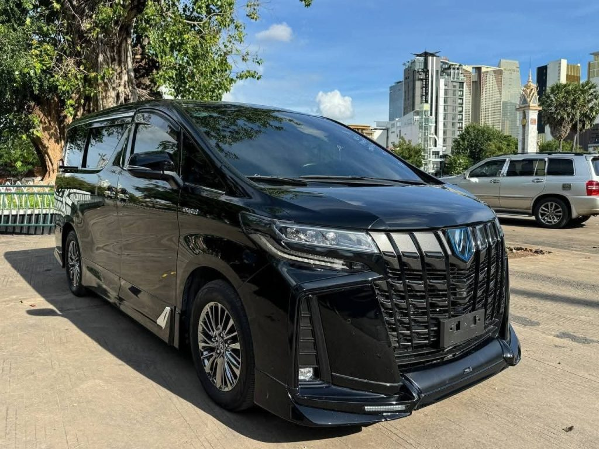
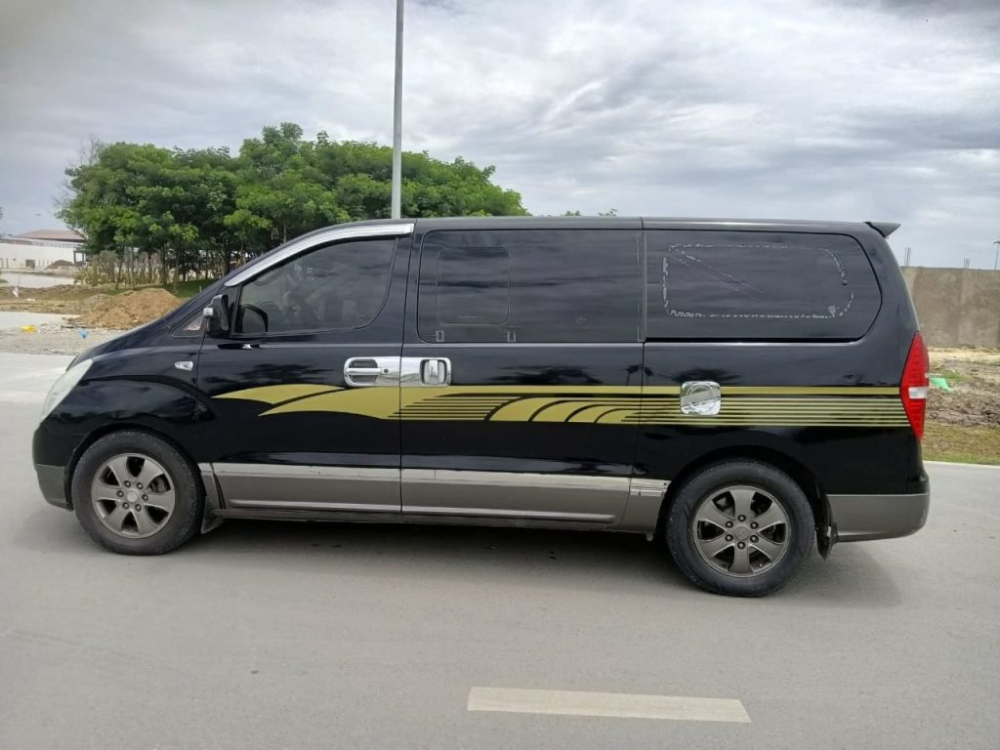
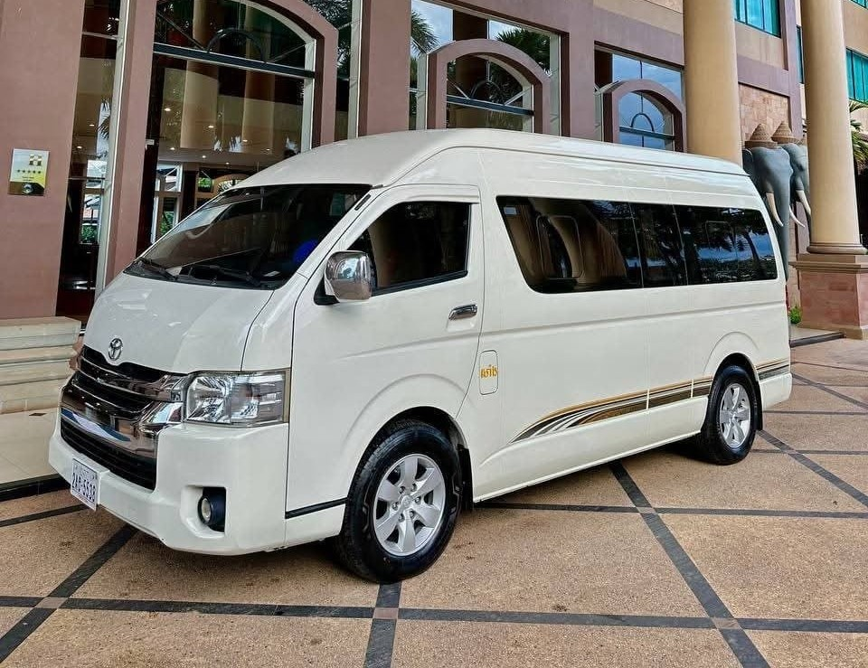

Angkor Wat Attractions
Every temple, site and experience covered on the 3-day Angkor Wat package — grouped by the day you’ll visit them.
What's covered on this tour
Floating Village
A community built on the water, reached by boat — one of the first stops after you land in Siem Reap.
Kulen Mountain Waterfall
A jungle waterfall on Cambodia's most sacred mountain, a short drive from Siem Reap.
Apsara Dance Show & Dinner
A traditional Khmer dance performance over dinner, closing out arrival day.
Angkor Wat Temple
The centrepiece of the trip — the largest religious monument in the world, built for Vishnu.
Banteay Kdei Temple
A quieter Buddhist monastery temple, part of the main Angkor circuit.
Angkor Thom City
The fortified last capital of the Khmer empire, entered through its famous carved gates.
Ta Keo Temple
A steep, mostly-undecorated temple-mountain — one of Angkor's earliest sandstone builds.
Ta Prohm Temple
The "Tomb Raider" temple — left half-swallowed by jungle roots, largely as it was found.
Banteay Srei (Pink Temple)
A small, intricately carved pink sandstone temple, 40km out on the Big Circle.
East Mebon Temple
A temple-mountain once set on an island in a now-dry reservoir, guarded by stone elephants.
Preah Khan Temple
A sprawling, atmospheric complex — once a Buddhist university and city.
Ta Som Temple
A small, little-visited temple known for the tree growing through its eastern gate.
Pre Rup Temple
A striking brick-and-sandstone temple-mountain, a favourite for late-afternoon light.
Neak Pean Temple
A small temple on an artificial island, reached by a raised wooden walkway.
More from Angkor


Mode of transport

VIP Car
A private air-conditioned sedan for small groups who want a quieter, more comfortable ride between temples.

Non-VIP Car
A standard air-conditioned car — the practical, budget-friendly option for couples and small families.

Minibus
For larger groups travelling together — one vehicle, one driver, everyone on the same schedule.

Angkor Tuk-Tuk
The classic way to see the temples — open-air, unhurried, and easy to hop in and out of between stops.
Want the full list explained day by day?
See how these sites fit into the 3-day itinerary, or ask us for a callback.